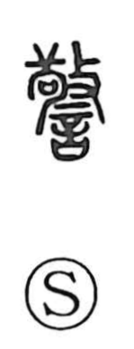

警

Uncategorized
Kun: imashimeru | On: kei
to warn ・ admonish ・ be vigilant ・ caution ・ police
Explanation
Shirakawa interprets 警 as a picto-phonetic graph built on 敬, which supplies the on reading kei and the core image. In early ritual scenes evoked by 敬, a Qiang person is forced to kneel before a sai, a covenant vessel that holds written petitions to the gods; he is struck as prayers are uttered—an admonitory rite meant to compel and warn. With the speech element 言 added, 警 comes to mean admonition expressed in words—speaking to warn. From there the sense broadens to being cautious or refraining, and further to making ready and providing.